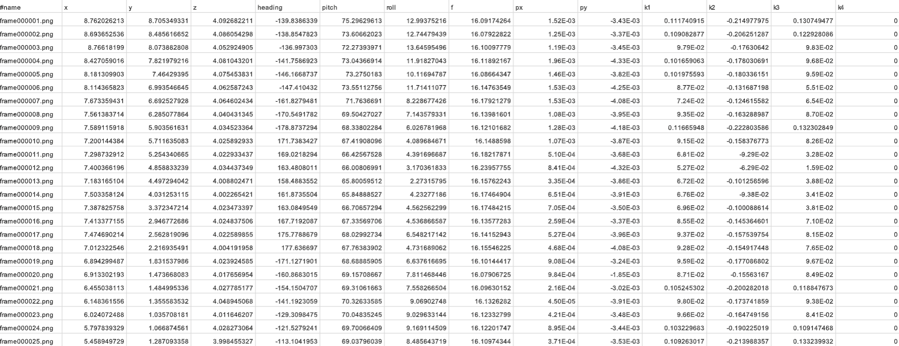

데이터셋 소개
이미지 데이터셋
카메라로 촬영한 이미지 데이터

위치 및 방향 데이터셋
RealityCapture를 사용하여 추출한 위치(x, y, alt)와 방향(heading, pitch, roll) 데이터
데이터 열 설명
위 이미지의 데이터 열은 다음과 같습니다:
- #name: 이미지 파일 이름
- x, y, z: 위치 좌표
- heading: 수평 방향 각도
- pitch: 수직 방향 각도
- roll: 기울기 각도
- f: 초점 거리
- px, py: 카메라 센서의 중심 좌표
- k1, k2, k3, k4: 렌즈 왜곡 계수